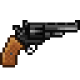
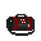

Аплинк
Страница находится в разработке
- Редакторы вики уже ведут работу над данной статьёй.
- При желании, вы можете подать заявку на редактора в нашем Discord и тоже принять участие в улучшении статьи.
- Данный этап: В активной разработке
Аплинк – это устройство, позволяющее получить доступ на черный рынок, где осуществляется торговля телекристаллами. Телекристаллы являются уникальной валютой, необходимой для материализации предметов. Однако, несмотря на преимущества и возможности, использование аплинком и участие в торговле на черном рынке несут в себе определенные риски.
Как пользоваться аплинком?
Вы, специальный агент синдиката, которому сообщили действующую частоту для входа на рынок.
Чтобы воспользоваться аплинком, вы должны:
1. открыть свой кпк
2. Открыть на нем настройки
3. Перейти на вкладку рингтоны
4. В функции установить рингтон введите шестизначный код из меню персонажа на с
Теперь у вас есть доступ на черный рынок, однако все, кто посмотрит в ваш кпк, увидят эту модификацию, так что не забывайте его закрывать.
5. Чтобы закрыть аплинк, нажмите кнопку закрыть аплинк, после чего данные сбросятся, и чтобы снова войти вам опять нужно ввести шестизначный код.
Аплинк: Врата в черный рынок телекристаллов.
«Аплинк – это модификация, предоставляющее доступ в мир черного рынка, где осуществляется торговля с использованием телекристаллов. Телекристаллы являются особым ресурсом, необходимым для покупки различных объектов и предметов. Эти загадочные кристаллы считаются драгоценными, их происхождение долгое время было неизвестно. Однако, многие думают, что руководство синдиката ответственно за поставки телекристаллов на черный рынок. »
Danger
- Телекристаллы представляют собой необычные камни, с помощью которых можно материализовать реальные предметы... Это позволяет вам получить доступ к редким и эксклюзивным предметам, которые иначе были бы недоступны и находятся вне закона.
- Аплинк стал самой продаваемой модификацией для подпольного рынка и преступных организаций, предоставляя возможность перейти к альтернативной системе торговли и получить доступ к необычным товарам. Однако, следует помнить, что использование аплинка и телекристаллов находится вне закона, и вся деятельность с рынком под запретом по всей галактике. Поэтому, перед использованием аплинка, важно нужно обдумать все возможные последствия и принять взвешенное решение.
- Нт доводилось слышать о незаконной торговлю с помощью специальной валюты тк, однако как ей воспользоваться до сих пор остается загадкой для ученых.
- Посетители и гости станции (любой с гражданским уровнем доступа) обязаны находиться в баре, библиотеке или жилом отсеке.
- Все сделки на черном рынке проходят на закрытом канале, который меняется ежедневно, а код доступа известен только нескольким поставщикам, которые предоставляют там товары и услуги. Многие пытались отследить теневой рынок, но все четно. Отследить операции невозможно, если вы не обладаете специальной частотой.
"Вещи Аплинка"
Вооружение
Список вещей которые можно приобрести в аплинке
Вооружение
| Наименование | Как выглядит | Сколько стоит | Описание | кто может приобрести |
|---|---|---|---|---|
| Кардашев-Мосин |  |
1 ТК | Проверенный временем друг любого охотника или солдата на войне. | Агенты/оперативники |
| Энергокинжал | 2 ТК | Обычная черная ручка с сюрпризом в виде энергетического лезвия. | Агенты/оперативники | |
| Гадюка | 3 ТК | Небольшой и маломощный пистолет с автоматическим ресивером. | Агенты/оперативники | |
| Кобра | 4 ТК | Пистолет с глушителем, использующий безгилзовые патроны. | Агенты/оперативники | |
| Одноразовая баллистическая турель | 6 ТК | Обычный ящик, при ударе который превращается в турель, которая стреляет во всех кроме синдиката. Чтобы ее убрать открутите отверткой, а чтобы починить гаечным ключом. | оперативники | |
| Питон |  | 8 ТК | Брутальный револьвер с бронебойными патронами .45 калибра | Агенты/оперативники |
| Энергетический меч |  |
8 ТК | Всем известный меч с лучом чистой, концетрированной плазмы, имеет шанс отражение снарядов. | Агенты/оперативники |
| Перчатки Полярной звезды |  |
8 ТК | Перчатки, позволяющие наносить удары без перерывов. | Агенты/оперативники |
| мини энерго-арбалет | 10 ТК | Арбалет, стреляющие отравленными дротиками, которые валят наповал. | Агенты/оперативники | |
| Двкхклинковый энергетический меч |  |
10 ТК | Самое нашумевшее оружие в преступном сообществе, где к одному из мечей добавили второй луч плазмы, имеет шанс отражение снарядов. | Агенты/оперативники |
| # Боеприпасы | ||||
| Наименование | Как выглядит | Сколько стоит | Описание | кто может приобрести |
| Пистолетный магазин(.25 безгильзовые) | 1 ТК | Пистолетный магазин совместимый с коброй. | Агенты/оперативники | |
| Пистолетный магазин(.35 авто) |  |
1 ТК | Пистолетный магазин совместимый с гадюкой. | Агенты/оперативники |
| Коробка патронов (.30 винтовочные) | 1 ТК | Каробка патронов .30 калибра. | Агенты/оперативники | |
| Коробка патронов (.60 крупнокалиберные) |  |
2 ТК | Каробка патронов .60 калибра для винтовки Христов. | Агенты/оперативники |
| Магазин ПП (.35 авто) | 2 ТК | Магазин с пулями .35 калибра для C-20r. | оперативники | |
| Спидлоадер (.45 магнум ББ) |  |
3 ТК | Магазин для быстрой перезарядки револьверов. | Агенты/оперативники |
| # Взрывчатка | ||||
| Наименование | Как выглядит | Сколько стоит | Описание | кто может приобрести |
| Светошумовая граната |  |
1 ТК | Стандартная граната, которая ослепляет и замедляет движения, кто находиться без защиты глаз. | Агенты/оперативники |
| Дымовая Граната |  |
1 ТК | Граната выпускающее продолжительный столб дыма. | Агенты/оперативники |
| ЭМИ граната |  |
2 ТК | Граната, выводящая из строя всю электронику вокруг. | Агенты/оперативники |
| Взрывчатка С-4 | 2 ТК | Взрывчатка для разрушение стен или объектов. | Агенты/оперативники | |
| Осколочная граната | 4 ТК | Граната выпускает серию осколков, наносящик огромный урон. | Агенты/оперативники | |
| Разрывная граната | 4 ТК | Второй лучший друг пехоты, главное кинуть её, когда выдерните чеку. | Агенты/оперативники | |
| Зажигательная граната | 4 ТК | Выпускает при взрывае серию зажигательных фрагментов. | Агенты/оперативники | |
| Взрывающаяся ручка |  |
4 ТК | Ручка с сюрпризом и таймером в 4 секунды до взрыва. | Агенты/оперативники |
| Пингвин гренадёр |  |
5 ТК | Агрессивный пингвин с гранатой на шее. | оперативники |
| Минибомба Синдиката |  |
6 ТК | Мощная, однака очень точечная бомба,наносящая огромный урон в малом радиусе. Подходит для уничтожение трупов. | Агенты/оперативники |
| Граната белой дыры |  |
6 ТК | Граната, отталкивающая все вокруг в течение примерно 10 секунд. | оперативники |
| Кластерная граната |  |
8 ТК | Связка трёх разрывных гранат. | Агенты/оперативники |
| Бомба Синдиката |  |
9 ТК | Большая бомба, которая взрывается после 120 секунд. Имеет крайне большой радиус взрыва. | Агенты/оперативники |
| Граната суперматерии | 10 ТК | Граната создает мощный гравитационный колодец. Взрыв сравнимый со взрывом минибомбы. | оперативники | |
| Разгрузочный жилет гренадёра |  |
12 ТК | Жилет с 4 разрывными гранатами, 2 ЭМИ гранатами и 2 минибомбами | оперативники |
| Набор С-4 |  |
12 ТК | Сумка с 8 взрывчатками С-4. | оперативники |
| # Разное | ||||
| Наименование | Как выглядит | Сколько стоит | Описание | кто может приобрести |
| Фальшивый диск ядерной авторизации | 1 ТК | Точная копия диска активации боеголовки, но только из пластика. | Агенты/оперативники | |
| Коробка закусок Синдиката | 1 ТК | Небольшой набор провизии и напитков, в комплекте идет игрушка. | Агенты/оперативники | |
| Ручка Cybersun |  |
1 ТК | Ручка фирмы Cybersun, которую можно использовать как отвертку, так и для документов. | Агенты/оперативники |
| Суперскользкое мыло синдиката | 1 ТК | Ни одна нога не устоит перед этим мылом. | Агенты/оперативники | |
| Пачка трав Интердайн | 2 ТК | Пачка сигарет, наполненные лекарственными травами. | Агенты/оперативники | |
| Сверхъяркий светильник |  |
2 ТК | Ослепляющий всех вокруг светильник. | Агенты/оперативники |
| Проводящие перчатки | 2 ТК | Изолирующие перчатки, которые проводят ток и бьют электричеством хозяина. | Агенты/оперативники | |
| Кластерное мыло Скользкопокалипсис | 3 ТК | После приземления разбрасывает вокруг себя кусочки мыла синдиката, которые испаряются через 60 сек | Агенты/оперативники | |
| Боевой медипен | 4 ТК | Одноразовый медипен восстанавливающий большинство видо повреждений. | Агенты/оперативники | |
| Стимпак | 4 ТК | Увеличивает скорость бега и позволяет быстрее восстанавливаться после оглушения. | Агенты/оперативники | |
| Набор лоббиста | 4 ТК | Набор кредитов, помогающий изменить чьё-то мнение. | Агенты/оперативники | |
| Боевая аптечка |  |
5 ТК | Набор для лечение в полях сражения. | Агенты/оперативники |
| Стильный алый сигвей Синдиката |  |
5 ТК | Алый сигвей для настоящик стиляг. | Агенты/оперативники |
| Баночка с ноктюрином | 6 ТК | 30 единиц сильного снотворного. | Агенты/оперативники | |
| Энергощит |  |
18 ТК | Щит, отражающий все лазерные лучи. | Агенты/оперативники |
| СиндиКот | 10 ТК | Взрывной, домашний, надресированный питомец. | оперативники | |
| Набор стимпаков |  |
12 ТК | Набор с 6 стимпаками, которые содержат дозу стимулятора. | Агенты/оперативники |
Наборы
| Наименование | Как выглядит | Сколько стоит | Описание | кто может приобрести |
|---|---|---|---|---|
| Набор химического синтеза | 4 ТК | Набор химика, включающий в себя токсин и вестин. | Агенты/оперативники | |
| Набор отключение электричества | 6 ТК | Содержит 3 ЭМИ гранаты и имплантер ЭМИ. Примечание: не выводит из строя настоящее огнестрельное оружие. | Агенты/оперативники | |
| Набор снайпера | 12 ТК | Содержание набора : Христов, заряженный 5 патронами, коробка из 10 антиматериальных патронов, форма АВД, латексные перчатки, красный галстук. Поставляется в коричневом чемодане. | Агенты/оперативники | |
| Набор боеприпасов |  |
15 ТК | Содержит 4 магазина для C-20r, 4 барабана для Бульдога и 2 короба патронов для L6 SAW. | оперативники |
| Набор "C-20r" | 17 ТК | Содержит Пистолет-Пулемёт "C-20r", 3 магазина ПП. | Агенты/оперативники | |
| Медицинский набор |  |
20 ТК | В набор входит: боевая аптечка, дефибриллятор и три боевых медипена. | оперативники |
| Набор "Бульдог" |  |
20 ТК | Содержание набора : Скорострельный дробовик "Бульдог", 2 барабана дроби и один барабан травматических. | Агенты/оперативники |
| Ящик припасов синдиката |  |
20 ТК | Ящик со случайным снаряжением общей стоимостью в 50 теле-кристаллов. Не может содержать имплант аплинка и голопаразита, пингвина гренадера, набора "зомби", всасывателя энергии, сегвея, некрономикона, мины уборщика; может содержать вещи с категории "работа" любых профессий. | Агенты |
| Набор "China-Lake" |  |
25 ТК | Содержание набора : Гранатомёт "China Lake" ; 4 единицы фугасной гранаты и 4 осколочных. | оперативники |
| Набор "L6 Saw" | 30 ТК | Содержание набора : Пулемёт "L6 Saw" ; 2 коробки патронов "L6 Saw". | оперативники | |
| Ящик суперприпасов синдиката | |
40 ТК | Ящик со случайным снаряжением общей стоимостью в 125 теле-кристаллов. Из-за стоимости вы не сможете купить этот набор в одиночку. Не может содержать имплант аплинка и голопаразита, пингвина гренадера, набора "зомби", всасывателя энергии, сегвея, некрономикона, мины уборщика; может содержать вещи с категории "работа" любых профессий. | Агенты |
| Зомби набор синдиката | 40 ТК | Вещмешок, содержащий в себе шприц с 15u ромерола, питон с обычными патронами .45 магнум, коробку из 60 зажигательных патронов .45 магнум, 4 таблетки амбузола плюс | оперативники |
Инстурменты
| Наименование | Как выглядит | Сколько стоит | Описание | кто может приобрести |
|---|---|---|---|---|
| Челюсти Жизни |  |
2 ТК | Комбинация лома и кусачек, которые могут открыть любую незабалтированную дверь. | Агенты/оперативники |
| Ящик инструментов |  |
2 ТК | Полный набор инструментов, где также бонусом идут силовые перчатки и противогаз синдиката | Агенты/оперативники |
| Обезвоженный космический карп | 2 ТК | Простой игрушечный карп для которого нужна вода, чтобы быть настоящим. | Агенты | |
| Хирургический вещмешок |  | 4 ТК | Набор хирургических принадлежностей. | Агенты/оперативники |
| # Утилиты | ||||
| Наименование | Как выглядит | Сколько стоит | Описание | кто может приобрести |
| Плечевая кобура |  |
1 ТК | Кобура, которая вешается на место пояса и имеет 60 слотов для оружия, патронов и коробок патронов. | Агенты/оперативники |
| Двоичный ключ шифрования | 1 ТК | 1 ключ шифрования для подключение к каналу роботов. | Агенты/оперативники | |
| Чёрный джетпак | 2 ТК | Джетпак, позволяющий летать в местах без гравитации. | Агенты/оперативники | |
| Ключи шифрования Синдиката | 2 ТК | 2 ключа шифрования Синдиката, для доступа в специальную частоту, работающую на любом расстоянии и независимо от наличия электроэнергии, не требует сервера. | Агенты/оперативники | |
| Гиподротик | 2 ТК | Дротик с резервуаром для 7u единиц химикатов. | Агенты/оперативники | |
| Голосовая маска |  |
2 ТК | Противогаз, позволяющий замаскировать свой голос под любой на ваш вкус. Имеет свойство "Хамелеон", позволяющий маскировать его под любую маску. Через неё можно дышать, пить и есть. | оперативники |
| Визор синдиката | 2 ТК | Визор оперативников, помогающий определить кто где. | оперативники | |
| id карта Агента | 3 ТК | ID карта агента, маскирующаяся под простую карту станции. Имеет свойство копировать доступы с других карт и изменять данные "Имя" и "Должность", может копировать доступы с других карт Агента. | Агенты/оперативники | |
| Глушитель связи |  |
4 ТК | При активации это устройство блокирует любую исходящую поблизости радиосвязь. | Агенты/оперативники |
| Оружейный модуль киборга |  |
5 ТК | Модуль, дающий киборгу продвинутый лазерный пистолет и мачете. | Агенты/оперативники |
| Стелс-коробка |  |
5 ТК | Ящик, оснащенный технологией невидимости, проникните везде и не двигайтесь слишком быстро! | Агенты/оперативники |
| Гипоручка | |
6 ТК | Механизм работы прямо как у гипоспрея. Имеет вместимость в 10u и перезарядку использования в 0.5 секунд. Вылить химикат из неё нельзя, только вколоть кому-то. | Агенты/оперативники |
| Телепорт обезьяньего подкрепления |  |
8 ТК | Вызывает подмогу, в качестве обученной обезьяны. | Агенты/оперативники |
| Криптографический секвенсор | |
8 ТК | Взламывает устройства, открывая доступ для всех. Имеет 3 заряда, 1 заряд восстанавливается по истечению 90 секунд. | Агенты/оперативники |
| Маяк сингулярности | 12 ТК | Устройство, притягивающее сингулярность. Поглощенный сингулярностью, заставаляет ее расти | Агенты/оперативники | |
| Набор "Голопаразит" |  |
14 ТК | Создаёт "роль для призраков". Голопаразита могут слышать окружающие, он не может появится без приказа хозяина и после отдаления в 3-4 тайла испаряется к хозяину. Хозяин и голопаразит имеют общее здоровье. Каждый раз Голопаразит наносит 20 "ударов" с высокой скоростью. Достать голопаразита имплантером нельзя. | Агенты |
| Телепорт подкрепления | |
16 ТК | При использовании издает гудок и создаёт "роль для призраков". Агент появляется с пистолетом, ножом, поисковым навигатором, одетый в комбинезон синдиката. Его задача — помочь вам с выполнением цели. | Агенты/оперативники |
| Телепорт штурмового киборга Синдиката | 65 ТК | Машина для убийств с доступом к энергомечу, пулемёту, криптографическому секвенсору и пинпоинтеру | оперативники |